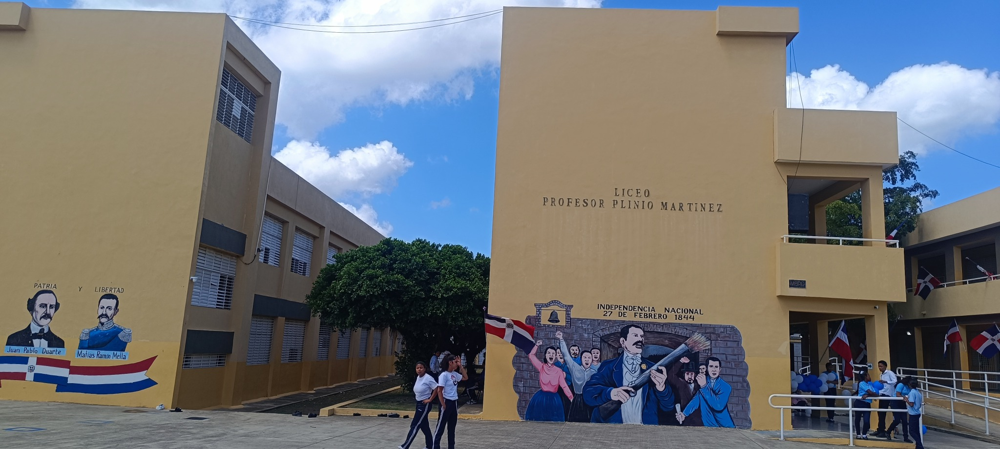

Historia, Misión, Visión y Valores.
El centro fue inaugurado en mayo de 2016 y realizó su transición a Politécnico durante el año escolar 2017–2018.
Su propuesta educativa integra formación académica, preparación técnica, valores, innovación y compromiso comunitario.
Eduardo Alcántara

Ser un centro educativo modelo en procura del desarrollo integral de nuestros jóvenes, haciendo énfasis en el pensamiento crítico, analítico y reflexivo que permita su integración a la sociedad con los mayores estándares de calidad..
VisiónPromover valores y habilidades para la vida que proyecten creatividad, innovación, ética y servicio de manera positiva en la sociedad.
Valores
Para conocer la historia del centro educativo Politécnico Prof. Plinio Martínez, es preciso hablar en primer lugar sobre su comunidad.
Historia del centro→